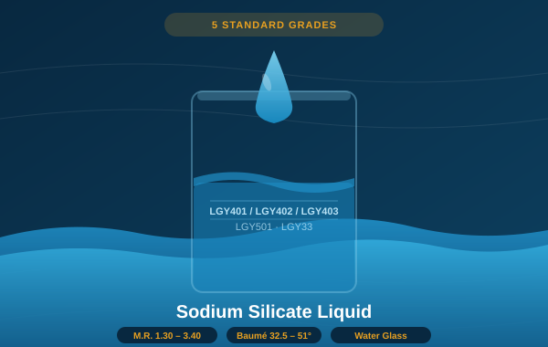

Five standard grades across the full M.R. 1.30–3.40 range. From foundry sand binders and concrete hardeners to adhesive resins and wastewater treatment — with custom SiO₂:Na₂O ratios available for specialized applications.

Liquid sodium silicate — commonly known as water glass — is one of the most widely used inorganic chemical compounds in industrial manufacturing. It is produced by dissolving sodium silicate solid in pressurized steam or hot water to yield a clear, viscous alkaline solution whose properties are precisely controlled by the SiO₂:Na₂O molar ratio (modulus ratio, M.R.).
A lower M.R. (1.3–1.5) produces a highly alkaline solution with strong binding and soil-conditioning properties, used in adhesives, soil stabilization, and heavy cleaning. A higher M.R. (3.2–3.4) produces a more silica-rich solution with superior binding in sand molds, ceramics, and anti-corrosion coatings. Between these extremes, intermediate grades serve construction hardening, paper manufacturing, water treatment, and food preservation applications.
We offer five standard grades (LGY401, LGY402, LGY403, LGY501, LGY33) and can formulate custom M.R. solutions for qualified customers with volume requirements. All grades are produced at our 100,000 MT/year Shandong facility under ISO 9001-certified quality management, with consistent Baumé readings and low water-insoluble content guaranteed lot-to-lot.
| Grade | Baumé (°Bé) | Modulus Ratio (M.R.) | SiO₂ (%) | Na₂O (%) | pH | Primary Application |
|---|---|---|---|---|---|---|
| LGY401 | 39 – 40 | 3.20 – 3.40 | 26 – 28 | 8 – 9 | 12.0 – 12.5 | Foundry sand binders (CO₂ process) |
| LGY402 | 39 – 40 | 3.20 – 3.40 | 26 – 28 | 8 – 9 | 12.0 – 12.5 | Ceramic molds, anti-corrosion coatings |
| LGY403 | 39 – 40 | 3.20 – 3.40 | 26 – 28 | 8 – 9 | 12.0 – 12.5 | Adhesive resins, paper sizing |
| LGY501 | 50 – 51 | 1.90 – 2.50 | 34 – 36 | 14 – 18 | 12.5 – 13.0 | Concrete hardener, waterproofing, soil stabilization |
| LGY33 | 32.5 – 35 | 1.30 – 1.50 | 20 – 22 | 14 – 16 | 13.0 – 13.5 | Heavy cleaning, soil conditioning, adhesives |
| Common Parameters (All Grades) | Value |
|---|---|
| Appearance | Clear to slightly hazy alkaline liquid, colorless to pale amber |
| Water Insolubles | ≤ 0.20% |
| Fe (Iron) | ≤ 0.015% |
| Viscosity Range | 30 – 400 mPa·s (grade-dependent) |
| Density | 1.25 – 1.55 g/mL (grade-dependent) |
| Shelf Life | 6 months minimum (sealed, 5–35°C) |
| Packaging | 200 L drum, 1000 L IBC tote, or bulk tanker |
| Custom M.R. | Available: 1.30 – 3.40 (contact for volume requirements) |
High M.R. (3.2–3.4) solution at 39–40 Baumé. Best for CO₂ sand binder in foundry molds, investment casting ceramic shells, and anti-corrosion primer coatings. Low Na₂O minimizes surface alkalinity deposits on casting surfaces.
50–51 Baumé, medium M.R. (1.9–2.5). Highest solids content = lowest shipping cost per kg of SiO₂. Used for concrete hardening, waterproof admixtures, shotcrete, and soil stabilization. Dilute on-site to desired concentration.
Low M.R. (1.3–1.5) at 32.5–35 Baumé. Highest alkalinity per silica unit. Used for corrugated board adhesives, wood binding, heavy degreasing, and agricultural soil amendment. Strong binding at ambient cure temperatures.
Tell us your application and preferred M.R. range — we'll send the right grade with a full spec sheet and grade selector guide.